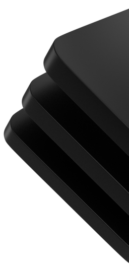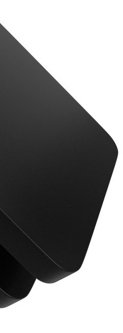
 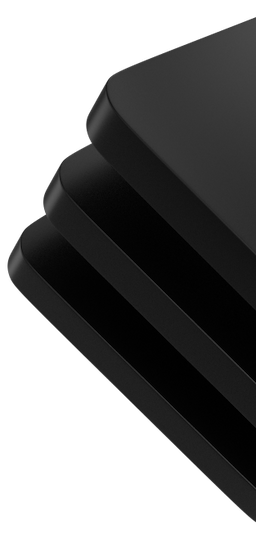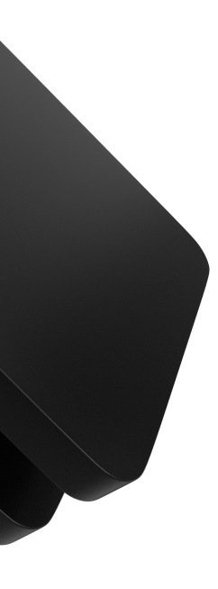
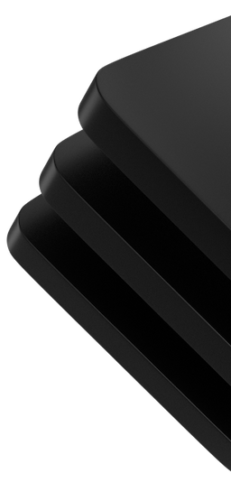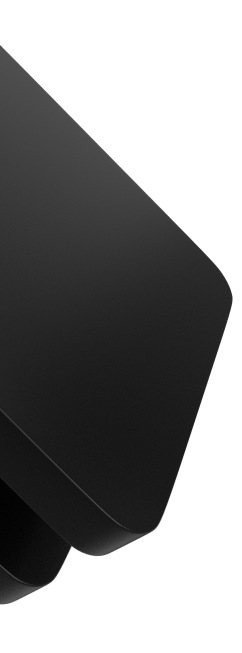Pioneering the
Next Generation
PRODUCTS
OpSec Cloudverse
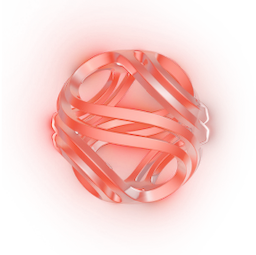
CloudSec Router
OpSec Network
OpSec's decentralized architecture is built upon advanced cloud network technology and it forms the foundation of a secure and resilient computing environment.
OpSec Nodes, the backbone of this infrastructure, allow users to deploy projects autonomously or collaboratively, fostering a diverse and inclusive ecosystem.
OpSec's decentralized computing architecture is meticulously crafted to redefine the landscape of distributed systems. Whether you are hosting decentralized apps, deploying blockchain nodes, or remotely accessing your servers, OpSec makes sure that your journey is characterized by security, independence, and innovative forward-thinking.
OneSec
Revolutionizing web hosting with decentralization and freedom. Experience the power of hosting what you want, free from censorship or monitoring. Leveraging IPFS technology, your websites are securely hosted, and once deployed, even we can't take them down. Enjoy the ease and speed of setup, with hosting ready in less than 5 minutes. Join us in shaping a decentralized future for web hosting with OneSec.
Decentralized
Fast
Features of OpSec
- One-Click Node Deployment
- Anonymity and Privacy Protection
- Scalability
- Compatibility with Existing Infrastructure
- Decentralized Network Architecture
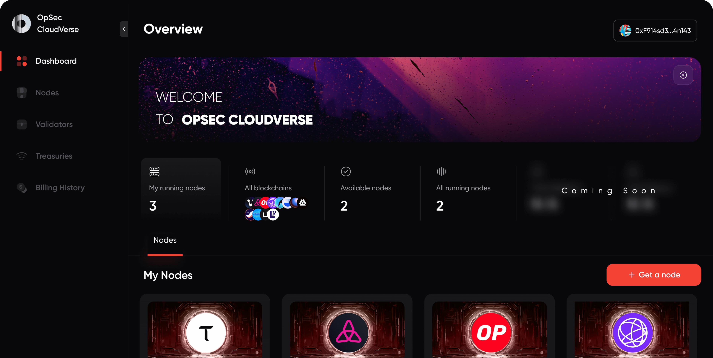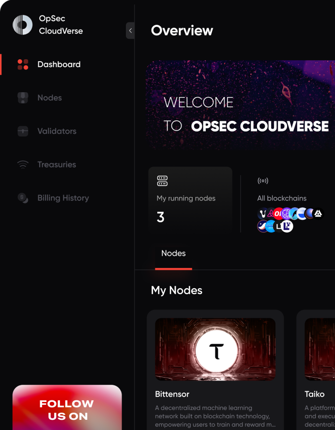
UNIQUENESS
How We Differ
Multi-chain Interoperability
One-Click Setup
Ecosystem Rewards
AI Integration
Roadmap
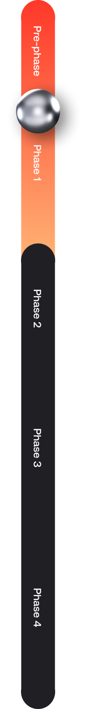
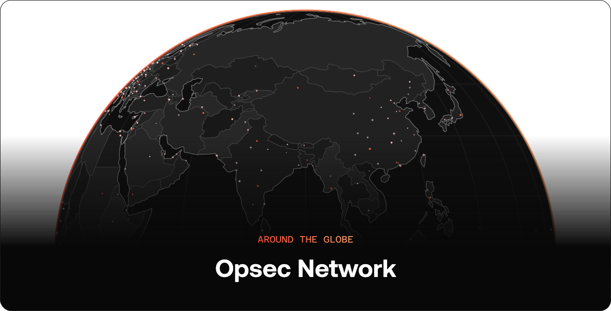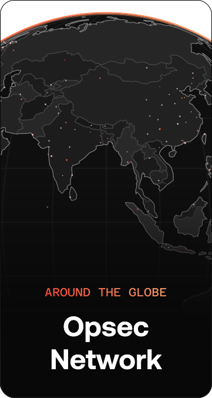